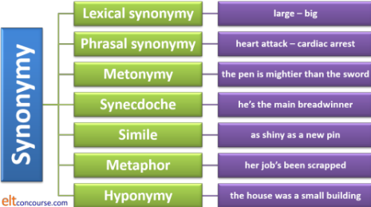
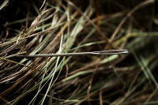
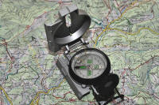

Synonymy
 |
The word synonymous has two meanings:
Here we are concerned, mostly, with the first meaning. David Greenglass is not, for our purposes, a synonym of betrayal. |
 |
Five related ideas:
|
All five of these are often considered subsets of synonymy.
- Metonymy
- the device of using a term closely associated with something
actually to mean the thing.
For example:
the White House has decided to come clean (Adams, 2015).
The term The White House (and the addresses of many other government offices) is routinely used as a synonym for The American Government.
This is also used with many other government addresses around the world, for example:
No 10 reveals there will be no early general election before 2020 (Daily Telegraph website)
Other examples of metonymy include
the stage [to mean the theatre or the acting profession]
the crown to mean monarchy / power
the bench [to mean a judge or group of judges]
a tongue [to mean language]
table a motion (to mean put a piece of paper on the table for discussion)
he is fond of the bottle (to mean he drinks too much)
the throne is above politics (to mean the monarchy is independent)
etc. - Synecdoche
- this device involves the use of part of something to mean
the whole or the whole of something to mean a
part. It's pronounced /sɪ.ˈnek.dək.ɪ/, by the way.
For example:
Part to stand for whole:
head count [in which head stands for person]
transistor [to stand for portable radio]
glasses [for spectacles]
threads [BrE slang for clothes]
wheels [for motor car]
wiser heads (for sagacious people)
call the hands (for members of a crew)
boots on the ground (for foot soldiers)
the hand that rocks the cradle rules the world (for mothers in general)
etc.
Whole to stand for part:
Britain has won a gold medal
Germany lost the race
the police have arrived
the army are guarding the port
Paris was starving
Washington welcomed the idea
the union voted to stay out
etc.
(Synecdoche derives from a lexical relationship in language known as meronymy which describes the relationship between, for example, car and windscreen, wheel, bonnet, dash board and so on. People have faces, heads, hands, arms and so on and from these we can derive:
there are new faces in the room
per head
many hands make light work
strong-arm tactics
and more.) - Simile
- is the device of making comparisons, often with the use of
as ... as or like. The sense of one item
is carried over to the sense of the other so in this way they
are synonyms.
For example:
he's like a fish out of water
he's as dull as ditchwater
as fast as lightning
it went like the wind
it made a noise like thunder
it sounded thunderous
her anger was volcanic
he appeared like a ghost
etc. - Metaphor
- by contrast, metaphor is the device of using language for an
item which actually is appropriate only to the synonym one
implies.
For example:
I have a lot on my plate [I'm very busy]
cut and paste [for computerised documents where physically cutting and pasting is not possible]
a political body blow
the election is a one-horse race
he showered her with gifts
she thundered through her presentation
etc.
Understanding metaphor is, of course, crucial to comprehending language. There are those who would claim that metaphor is, in fact, the way we make sense of everything.
Almost all behavioural and material process verbs can be used metaphorically so we have, for example:
pull out of a contest
dive in to an explanation
fire questions
shoot arguments down
iron out difficulties
boil with rage
cook the books
and thousands more.
Multi-word verbs, too, especially phrasal verbs, are often used metaphorically so we encounter:
pick up a language
throw out a question
strike up a conversation
get over an illness
and so on.
Metaphor can, of course, be taken too far and result in clumsy, sometimes risible, expression. Here's an example from a communication from Amazon, the mail-order company:
feedback like yours motivate us to dive deep and unearth ways and means which helps us
and that, apart from the two nasty errors in concord, conjures an unlikely picture of people diving deeply into the earth.
While it is helpful to get learners to understand how verbs in particular may be used metaphorically, examples of that order are unhelpful. - Hyponymy
- a relationship between words in which the meaning of one
word includes the meaning of others which are closely related
(compare synecdoche).
There are two bits to this:- The hypernym is the word which includes the meanings of others (often called the superordinate)
- The hyponyms are all the second-level words which are related to each other and each one may, in turn, act as a superordinate with a third level of hyponyms below it.
A bus collided with a lorry outside the shop. Both vehicles were badly damaged
 |
Synonymy |
Apart from the five categories above, there is, of course, synonymy proper. For example
- We can say
The pub's over the hill
or
The pub's beyond the rise
and, in the same context, the two prepositional phrases would be considered functionally synonymous.
That's phrasal synonymy. - We can say
I'm eager to go
or
I'm keen to go
and few would argue that keen and eager mean pretty much the same thing.
That's lexical synonymy. - Apart from synonymy proper in cases 1. and 2. there is a
relationship called troponymy. A troponym is a word which
carries the same essential meaning but defines the concept more
precisely.
For example, the word stroll is a troponym of walk because its meaning contains the idea of walking slowly in a relaxed manner.
As a shortcut in the classroom troponyms are often simply defined as a kind of xxxx and that suffices in many cases but we need to be a bit more careful sometimes because that may lead a learner to errors such as:
He strolled casually and slowly
which, while not obviously wrong, contains a redundant adverb phrase.
Here's the cut-out-and-keep summary:

And here's a short test to see if you can identify all seven.
There are theoretical linguists and others who would not analyse synonymy like this. So be it. This site is concerned with categories which help language teachers understand how the language they are teaching fits together.
 |
Synonymy in the classroom |
As teachers, we are often reduced to explaining new vocabulary by resorting to synonyms that the learner knows and that's legitimate, providing we are careful. So, for example, this exchange is typical of what happens:
| Learner: | What does 'register' mean? |
| Teacher: | In this case, it means put in a user name and a password on the website. It can also mean just put your name into a list. |
There are, however, some problems which a more careful look at synonymy reveals.
Problems with using synonymy |
 |
sense problems |
It has been claimed that:
By
taking the synonym of a word, and then a synonym of that
synonym, and so on, you can ultimately arrive at any other
word in the English language.
(Probably Christopher Cinq-Mars,
https://www.cinqmarsmedia.com/synonymy/)
That can, in fact, only be true if you ignore shades of meaning
and word class. Clearly, if synonyms were exact
matches, with exactly the same meanings, the game
of hunt-the-synonym-chain could not function. The only way one
can arrive at any other word in the English language is to follow
shades of meaning and ignore word-class changes.
If you ignore the sense relationships, you can get from
turquoise to depressed via blue (ignoring the
dual meaning of blue), from appendage to machine gun
via arm and from deposit to rely via
bank if you ignore the fact that bank is, in this case, a
set of homonyms. You can also get from occupation to
operate via work if you ignore the fact that work
is a verb as well as a noun.
It's a good game but useless for teaching purposes because we are
actually very concerned with meaning and word grammar.
Two lexemes may be synonymous in some senses but not in others.
For example
Bring the papers with you = Bring the paperwork
with you
BUT
I like to read the Sunday papers ≠ I like
to read the Sunday paperwork.
The door is open = The door is
unlocked
BUT
The shops are not open on Saturdays ≠ The
shop are not unlocked on Saturdays
Some linguists deny the existence of synonymy altogether. They argue that if we have two words then we need two words because they refer to different things. It's a sustainable argument.
 |
syntactical / colligational problems |
Briefly, colligation refers to similarities of grammatical collocation.
A popular example of this problem are the words probable
and likely.
- It's likely John will be late
It's probable John will be late
BUT - John will likely be late
*John will probable be late
In 1., the two words are synonyms with the same grammatical
characteristics but in 2., although the
meaning is the same, the grammar isn't. The words form
syntactical relationships
differently.
We can't make the
subject of the clause be the person identified in both cases but the
construction with the dummy it works for both words.
By some definitions, these two words are not synonyms because full
synonymy demands both semantic and structural similarity. If
we are only discussing meaning, they are synonyms.
Here are some more examples (mostly from Hudson et al (1996:
442)):
- try vs. attempt
It's hard to get right but please try to
It's hard to get right but please attempt to
BUT
It's hard to get right but please try
*It's hard to get right but please attempt
The to complement is optional with try but obligatory with attempt - ought and should, let
and allow
These are often synonyms but ought requires (usually) the to + infinitive and should never does; allow needs the to but let does not. For example:
I ought to go vs. *I ought go
I should go vs. *I should to go
I allowed her to go vs. *I allowed her go
I let her go vs. *I let her to go - stop vs. cease
It stopped raining
It ceased raining
BUT
It ceased to rain
*It stopped to rain
cease may be followed by an infinitive or an -ing form but if stop is treated the same way the to is interpretable as in order to. - want vs. wish
I want to go to London
I wish to go to London
BUT
I want the heater turned on
*I wish the heater turned on
wish does not permit a passive participle so the last sentence would be understood as
It's a pity the heater is faulty and won't switch on - sick, poorly, unwell
The child was sick
The child was poorly
The child was unwell
The sick child
The poorly child
BUT
*The unwell child
Synonymous adjectives may have different characteristics in terms of attributive vs. predicative use. - nearly vs. almost
I nearly lost my temper
I almost lost my temper
I very nearly lost my temper
BUT
*I very almost lost my temper
The issue here is choice of modifier: almost cannot be modified with very. - as well, also, too
It rained as well
It rained, too
It rained also
It also rained
BUT
*It too rained
*It as well rained
Some words can have flexible word ordering; others are stricter. - hide vs. conceal
I hid it in the cupboard
I concealed it in the cupboard
BUT
I hid in the cupboard
*I concealed in the cupboard.
Transitivity with otherwise synonymous verbs is sometimes an issue. The verb conceal is always transitive. - though and although
are often presented to learners as synonyms. Conceptually, they are but syntactically they are not. The word though can be a conjunct or a conjunction but although is only a conjunction. We can accept, therefore:
The work was done on time. It was more expensive than I expected, though
The work was done on time though it was more expensive than I expected
The work was done on time although it was more expensive than I expected
but not:
*The work was done on time. It was more expensive than I expected, although. - like and as
are often confused because both function as comparative prepositions so we have:
He talked like a teacher
and
He talked as a teacher
However, the first means that his manner of talking was similar to a teacher's although he was not one and the second refers to the manner of speaking, too, but suggests he really was a teacher and operating in that role.
 |
syntactical homonymy |
This is also a syntax-related issue.
One example will suffice here. You might assume that the word
since in:
- I have been here since the beginning of the year
- I have been here since I was a child
and - I went there five years ago and haven't been back since
are examples of the word since all having the same
meaning (or even being the same word).
However, in sentence a., the word is a preposition, in sentence b.,
the word is a subordinating conjunction and in sentence c., the word
is an adverb. They may have the same meaning, i.e., are
synonyms, but they certainly do not have the same syntactical
properties. That is what is meant by syntactical homonymy.
You can have:
- Since the beginning of the year I have been here
- Since I was a child I have been here
and - Since I went there three years ago I haven't been back
but in a., we are fronting a prepositional phrase for marked effect, in b., the marking is much less obvious with a simple reversal of the clauses in a complex sentence and in c., we are forced to repeat the pronoun, I, to get a well-formed sentence which some may find only marginally acceptable or clumsy.
The word since can also function as a subordinating
conjunction with the different and unrelated meaning of a
resultative or causal sense in, e.g.:
Since I was in London, I went to see my aunt
I had a drink since it was an hour before my train left
but it would be perilous to suggest to a learner that because
and since are synonyms except in this restricted use.
The word can even function as a postpositioned preposition so
instead of
She was here an hour ago, but hasn't returned
we can, in some varieties have:
She was here an hour since, but hasn't
returned
but suggesting to a learner that since and ago are
synonyms will not be productive of well-formed grammar (or very
helpful).
 |
connotational problems |
Lexemes may be synonymous in sense (denotation) but not in connotation.
For example, determined. pig-headed and stubborn mean much the same thing but
have positive or negative connotations. Compare,
too, terrorist, freedom fighter, partisan and
resistance fighter.
A doctor and a quack may do the same job but are
viewed rather differently.
In addition to the word-class difficulties set out below concerning
small and little, it is worth noting that
little is used pejoratively or affectionately but small
does not carry those connotations so, for example:
She had a beautiful little house
implies the house was attractive to the speaker and viewed with
affection but
She had a beautiful small house
merely comments on the size of the house.
Equally:
He's a nasty small man
suggests that he is unpleasant and of a small stature but:
He's a nasty little man
suggests that he is unpleasant and contemptible but says nothing
much about his size.
 |
collocational / word class problems |
We can have tough rope and strong rope as well as strong people and tough people but other collocations are not possible: strong winds not *tough winds, a tough job not *a strong job and so on.
The words small and little form another popular example with numerous collocational and syntactical difficulties.
- Youth vs.
size
We can have, e.g.,
a small town
and
a little town
(although little might collocate better with village).
On the other hand, we can also have
a little girl
a little puppy
and
a small girl
a small puppy
but the first adjective implies young and the second, diminutive size.
An expression such as
her little sister
also implies an age difference rather than a size difference. - Determiner vs. adjective
With countable nouns, little usually refers to size and so does small so we allow both:
It was a small house next to the pub
and
It was a little house next to the pub
However, with mass nouns, little and a little are quantifying determiners, not adjectives so, e.g. we allow both:
I have little news for you
and
I have a little news for you
and the first implies an insufficient amount while the second implies a small but adequate amount.
but we do not allow
*I have small news for you
or
*I have a small news for you
because the word small cannot be used as a determiner. We have, therefore:
Put a little water in the whisky
not
*Put a small water in the whisky
and
A little more, please
but not
*A small more, please
and
A little time later
and not usually
?A small time later.
The word small is only adjectival and it's sometimes hard to see this. We can have, e.g., a small difficulty and a little difficulty but
He did it with little difficulty (determiner)
vs.
*He did it with small difficulty. - Attributive vs. predicative use
As a rule, little is not used predicatively so, usually:
It was a little dog
is preferred to
?The dog was little
but small may be used in both ways. - Comparative and superlative forms
When these are required, little gives way to small so we usually prefer:
Take the smaller / smallest cup
to
?Take the littler / littlest cup
etc. Using little in the comparative and superlative forms is confined to children's speech. - Adjective or adverb
The word little is also an adverb (unlike small) so we allow, e.g.:
I little understood what she was talking about
but not
*I small understood what she was talking about
and
The woman was a little unhappy
but not
*The woman was a small unhappy - Noun or adjective
The word little may also be used as a noun but small cannot so we have, e.g.:
He lost the little he had
not
*He lost the small he had.
For a little (!) more on the use of little as a determiner and a pronoun, see the guide to indefinite pronouns.
 |
stylistic problems |
Words may be synonyms but vary in formality. For example,
He's a dustman vs. He's a cleansing operative.
Toilet, loo, bog, bathroom, restroom, john are all words
for the same thing but stylistically very different.
I wonder if you would mind opening the window
Please open the
window
Let's have the window open, shall we?
are
functionally synonymous but stylistically and communicatively
different.
The conjunctions like and as or as if are often described a synonyms
and they do perform similar functions. However:
He shouted like he was a maniac
and
He shouted as if he were a maniac
are distinguished in terms of formality, not least because the
second requires the formal subjunctive form of the verb.
Almost any word in English which has a close synonym will differ
from it in style (and, often other respects). So, for example
we can get sets such as:
reception, party, do, knees up, bash
work, chore, labour, toil, slog, graft
happy, contented, content, pleased, glad, joyful, cheerful,
cheery
etc. which all differ only stylistically and, therefore, by their
appropriacy to the context in which they are used.
 |
register problems |
We have cricket pitches, golf courses, football grounds and tennis
courts: they all mean something like playing area
and are synonyms but you cannot have *a football court, *a golf
ground or
*a tennis pitch.
A porthole is the same thing as a
window, a cabin is a bedroom and a
galley is a kitchen but the first of each pair are
found on ships and the others in homes.
a doctor's examination
is not synonymous with
a car mechanic's inspection
although the words inspection and examination are
often considered synonyms.
 |
affixation problems |
Word formation causes problems if an assumption is made that two words are synonymous in all ways. For example:
- We can have unwise but not *unsage although wise and sage are often synonyms.
- The words pleasant and nice are often synonymous although we allow unpleasant but not *unnice.
- We can make a noun from adore with a suffix (adoration) but we can't do the same with love or worship.
- The verbs esteem and respect are often synonymous (both as nouns and verbs) but a moment's thought reveals that their properties vis-à-vis suffixation are different. We can have respectful, but not *esteemful, disrespect but not *disesteem.
- Equally, the nouns help and aid are often synonymous but we can form an adjective from the first (helpful) but not from the second (*aidful).
 |
variety problems |
Words which are synonymous in meaning but differ in dialect are
out of place when used in the inappropriate variety.
A BrE lift is an elevator in AmE, and there are
hundreds of other synonymous terms. Other varieties of English
around the world demonstrate similar pairings.
In BrE the word footpath can denote a pavement or
a small country way but in Indian English, it is a
pavement. In American English, it's a sidewalk.
The verb revert in BrE means go back but in Indian
English is often used to mean reply.
In BrE, the term bathers refers to people swimming in
the sea or a pool. In Australian English it refers to
a swimming costume.
In BrE, the word blue is usually a simple adjective but in
Australian English is can be used as a synonym of the noun
mistake.
Grammatical (colligational) differences also occur.
For example, in Indian English, the verb appreciate can be
used intransitively as in:
I would appreciate if you would help me
and the verb reach, in the sense of arrive, can
also be used that way.
In other varieties of English, the verbs must be transitive.
AmE also makes verbs transitive which are, in BrE intransitive so we
get, for example:
protest the idea
write me
and so on which in BrE require complementation with a prepositional
phrase (protest against and write to).
 |
CAUTION, therefore |
Although it can be helpful simply to provide what we think is a
synonym for something a learner doesn't understand, it's a technique
to handle with a little care or we will end up seriously misleading
our learners.
It should be clear by now that it isn't enough to say this word
or phrase means the same as that one. That procedure is
fraught with perils and is the source of much confusion and, what's
worse, teacher-induced error.
 |
Teaching |
Understanding and using concepts of synonymy is something many learners would like very much to be able to do. They are aware that a rich and appropriate source of lexis on which to draw contributes to sounding sophisticated and getting their messages across clearly and vividly.
 |
Exploiting lexical and phrasal synonymy |
A favourite of course-book writers and some teachers are
exercises which require the learners to find words in a text which
mean the same as words in a list provided.
Here's an example of why it doesn't always help:
| Grand
Theft Auto: The game is played from either a third-person or first-person view and its world is navigated on foot or by vehicle. Players control the three lead protagonists throughout the single-player mode, switching between them both during and outside of missions. The story is centred on the heist sequences, and many of the missions involve shooting and driving gameplay. Players who commit crimes may incite a response from law enforcement agencies, measured by a "wanted" system that governs the aggression of their response. Grand Theft Auto Online, the online multiplayer mode, lets up to 30 players explore the open world and engage in cooperative or competitive game matches. |
||
| Find words in the text which mean: | ||
| found your way regulate heroes |
operations robbery steering a car |
do a crime hostility supportive |
All the words are synonyms of the words in the text. However, if we replace them the text (as learners are being encouraged to do mentally) we end up with:
| Grand
Theft Auto: The game is played from either a third-person or first-person view and its world is found your way on foot or by vehicle. Players regulate the three lead heroes throughout the single-player mode, switching between them both during and outside of operations. The story is centred on the robbery sequences, and many of the missions involve shooting and steering a car gameplay. Players who do a crime crimes may incite a response from law enforcement agencies, measured by a "wanted" system that governs the hostility of their response. Grand Theft Auto Online, the online multiplayer mode, lets up to 30 players explore the open world and engage in supportive or competitive game matches. |
Which is close to nonsense in places.
To avoid this kind of thing, we need to be much more careful and
consider:
syntax, sense, connotation, collocation, style, register and
variety.
Here's what we should have done:
| Grand
Theft Auto: The game is played from either a third-person or first-person view and its world is navigated on foot or by vehicle. Players control the three lead protagonists throughout the single-player mode, switching between them both during and outside of missions. The story is centred on the heist sequences, and many of the missions involve shooting and driving gameplay. Players who commit crimes may incite a response from law enforcement agencies, measured by a "wanted" system that governs the aggression of their response. Grand Theft Auto Online, the online multiplayer mode, lets up to 30 players explore the open world and engage in cooperative or competitive game matches. |
||
| Find the parts of the text which mean: | ||
| people take part in the game and you walk or drive around players are in charge of the three important characters |
the story mainly concerns scenes of robberies players who break the law |
provoke the police work together or against each other |
By focusing on mostly phrasal synonymy, we can maintain the sense of the text and increase our learners' knowledge of the language without producing unnatural or misleading examples. Simple, but it needs a little thought.
 |
A note on word class |
Synonyms must, of course, share the same word class. If we decide
to have a synonym matching task, we need to be careful that the
items share a word class and we are not offering, e.g., look up
to as a synonym for admiring or do the washing as a
synonym for laundry.
This error in materials design is more common than you may
imagine (and more common than it should be).
 |
Exploiting metonymy, synecdoche and hyponymy |
As these three devices are similar in many ways (lots of people can't distinguish between them) we don't really need to trouble our learners with the subtleties of use.
We can, however, and arguably should, raise our learners'
consciousness of just how commonly these are used in both written
and spoken English.
For example, an exercise like this often performs a very useful
function because it raises learners' awareness of how one term may
stand in for another, providing that there is a close association.
| What words in red on
the left carry the same meaning as words on the right
in
black? Circle and draw lines between the words. What is happening here? Discuss with a partner and then tell the class. |
|
| Downing Street has issued a press release. | Watch the ball carefully. |
| His residence is normally in Spain but he is staying in a house in London now. | The British Prime Minister's Office has issued a press release. |
| Keep your eye on the ball. | After acting in the theatre, he started working in the film industry. |
| He went into film after a time on the stage. | He usually lives in a house in Spain but his residence is in London now. |
In the above there are examples of all three of these synonym devices. Identify them, if you will.
If you are using a reading text in class, look out for examples like this so you can be prepared to alert your learners to what is happening and what term is standing for another.
 |
Using simile |
As we saw above, simile in English is often achieved with the
as ... as or like connections. The as ... as
connection, in particular, frequently forms common, fixed binomial
expressions (or clichés if you prefer) such as
as deaf as a post
as dead as a doornail
as bald as a coot
as drunk as a judge
as blind as a bat
as
cool as a cucumber
as fit as a fiddle
etc. Some of these are quite ancient similes and many
come from Shakespeare and biblical sources. Some are of fully
obscure origin.
The like formulation also occurs in fixed expressions such
as
like a breath of fresh air
like a man possessed
like a
tornado
etc.
There is a cline here from more or less
fixed expressions to more flexible semi-fixed ones. (For more,
go to the guide to
idiomaticity linked in the list of related guides at the end.)
Simile can also be achieved without the use of any connector except a
copula of some kind:
She's a bit of a dragon
He's becoming
something of a grumpy old bear
etc.
Rarely, similes can
be made with -like or -wise suffixes:
She
talked machine-gun-like
They walked crabwise
etc.
The like formulation to compare two things is rather more
flexible and it's routine for speakers to make them up as they go
along to imply something is synonymous with something else in some
sense. For example
He talks like a machine gun (sounds)
He sings like a crow (makes a noise)
It's like a bad dream (feels)
etc.
Fixed similes and the ability confidently to deploy the like
formulation to add meaning are both important for learners of a
language and the area is not difficult to teach. In particular, the
ability to use sound, look, taste, feel, seem, smell + like
is important.
(When at a a loss to find an appropriate synonym with which to form
a simile, some native speakers in casual speech resort to ... like
anything for want of something better. We get, for
example:
She enjoyed the party like anything
Learners may need to be made aware of this use but it is not
something on which to dwell because it betrays a lack of available
vocabulary in the speaker.)
Similes can also be created in English with the use of neither
the as ... as nor the like formulation.
Here's a short list of what is meant:
paper thin (=as thin as paper)
crystal clear (=as clear as crystal)
feather light (=as light as a feather)
grass green (=as green as grass)
sky high (=as high as the sky)
ice cold (=as cold as ice)
etc.
These formulations are rarer and the formation of adjectival
compounds like these is unpredictably allowable.
Both fixed phrases and the ability to use simile
can be taught. Here are a couple of ideas:
| Match the phrase on the left with the ones on the right: | |
| as blind as | a cucumber |
| as safe as | a bat |
| as fit as | gold |
| as cool as | mustard |
| as old as | a fiddle |
| as good as | houses |
| as thin as | clockwork |
| as regular as | rain |
| as keen as | the hills |
| as right as | a rake |
| Spot the simile and underline it. Can you say the same in your language? |
| The rain was so heavy, it felt
like a monsoon and John arrived looking and feeling like a
drowned rat. The house was a complete tip and looked like a bomb had hit it. He went through it like a whirlwind, clearing everything up because he knew his mother would explode if she got home and found it in that state. By the time he'd finished, he was dog tired but happy that the house seemed a bit more like a proper home and less like a students' common room. It smelt a bit less like a takeaway pizzeria, too. |
Completing expressions can also be helpful and lead to some interesting cross-language comparisons such as:
sleep like ________
sing like ________
work like ________
run like ________
smoke like ________
drink like ________
etc.
Once presented, such structures can be reinforced with gap-fill tests to locate acceptable combinations and with freer exercises to compare common objects, actions, people, situations and so on. It's not difficult to do that.
Some of these fixed similes have alternatives, with alternative meanings.
For example, we can have
run like a hare [fast]
run like a
rabbit [in fear]
run like clockwork [smoothly]
All languages do this kind of thing and have traditional
similes for many common verbs and nouns. It can be amusing,
interesting and educational to do some cross-language analysis with
learners.
For example, the expression
that story is as old as the hills
will translate into German roughly as
that story has a long
beard
In the same language, however,
as poor as a
church mouse
translates word for word.
In French, that
would be
as poor as Job
and
to smoke like a chimney
in that language translates as
to smoke like a fireman.
The expression:
as flat as a pancake
translates exactly into Swedish and so
does
as slippery as an eel
but
stubborn as a mule
might translate as
as stubborn as an old goat.
In Hungarian,
drink like a fish
is rendered as
drink
like a brush maker.
In Spanish, finally
sleep like a log
translates as
sleep like a dog
and
mad as a hatter
translates into
crazy as a goat.
Learners will, naturally, often assume that similes will translate
across languages – they rarely do, but it's fun finding out.
|  |
Using metaphor |
| a needle in a haystack |
In the spot-the-simile exercise we have sneakily inserted one metaphor: explode. We do not mean that the mother will actually explode.
Metaphor is a more difficult, but, many would argue, even more important area to tackle simply because metaphor is so common in English. It is almost impossible to understand much of the language unless you are alert to metaphorical uses. It has been asserted that nearly all thought and language is metaphor of some kind.
Consider these examples:
he hammered on the door
she was boiling with rage
his face darkened
that's music to my ears
I have a mountain of work to do
etc.
In none of these is the word meant literally; nobody used a hammer,
boiled, went dark, heard music or saw a mountain.
Writers have deployed metaphor for thousands of years to
make a point more vivid.
Even in Harry Potter, not otherwise considered great literature,
they occur quite frequently. For example:
she spent so much of her time craning over garden fences
and
they drain peace, hope, and happiness out of the air around them
The master was PG Wodehouse who, it is said, invented a new metaphor (or simile) on almost every page:
Jeeves shimmered in
the supply of the milk of human kindness was
short by several gallons
the voice of Love seemed to call to me,
but it was a wrong number
unseen in the background,
Fate was quietly slipping lead into the boxing-glove
the butler loomed in the doorway
As with similes, many of the metaphorical expressions commonly used in English have become clichés and are more or less fixed. They can be approached in a way similar to the ideas for simile above. For example,
| Choose the right word: | |
| She ___________ with rage | exploded, banged, burst |
| They ____________ into tears | exploded, went off, burst |
| He ________ the idea down | shot, destroyed, gunned |
| He ________ his success | trumpeted, sang, drummed |
| We are ________ with the problem | weighed, loaded, saddled |
| There's light at the end of the ________ | road, way, tunnel |
| He ________ through the agenda | motored, hurtled, steamed |
Human emotion, of course, is a rich field:
We explode, erupt, spit blood, burn, boil, seethe, become volcanic etc. with anger and happiness has us on top of the world, over the moon, flying high, walking on air etc.
Here are some more (mostly from Verspoor, 1993)
| Anger | Happiness | Sadness | Love | Fear |
| boiling | in high spirits | have the blues | starry-eyed | petrified |
| blowing a fuse | making merry | broken up | falling for someone | frozen |
| blowing up | on cloud nine | with a heavy heart | stuck on someone | shaking in your shoes |
| blowing your top | tickled pink | in the dumps | swept off your feet | spine chilling |
| foaming at the mouth | in heaven | have a long face | losing your heart | give someone the creeps |
| fuming | in paradise | crest-fallen | struck with someone | paralyzed |
| storming | glowing (with) | heartbroken | sweet on someone | hair standing on end |
| flying off the handle | over the moon | aching | head over heels in love | jump out of your skin |
Any section of the above would provide raw material for an interesting presentation and practice of common metaphors.
All fields of activity are called on to make metaphors and that can
be a useful way to approach raising learners' awareness of them.
For example:
| Match the metaphor with the topic: | ||
| The crowd was a sea of umbrellas | military | |
| Attach a file | ||
| It's all a bit of a dog's dinner | ||
| The idea sank without trace | ||
| It sticks in my throat | ||
| Use Notebook | science | |
| I'll chew the idea over | ||
| Sweet dreams | ||
| It's a bitter pill to swallow | ||
| It'll be plain sailing from here | ||
| It was a battle of wills | food and drink | |
| The sweet smell of success | ||
| He's eaten up with envy | ||
| The idea was floated | ||
| The idea started a chain reaction | ||
| He's a couch potato | the sea and ships | |
| Put it on the clipboard | ||
| Open the folder | ||
| The taste of freedom | ||
| There are choppy waters ahead | ||
| Cut and paste the section | office equipment | |
| We have an ocean of work to do | ||
| She fought her ground | ||
| I gave it a wide berth | ||
| Bitter memories / experience |
|
|
synesthesia |
It has frequently been noted that certain adjectives which are
literally applicable to one of our five senses can be transferred
metaphorically to another. We get, therefore:
a sharp sound (touch to hearing)
a smooth taste (touch to taste)
a sweet smell (taste to smell)
a flat taste (touch to smell)
a loud pink blouse (hearing to sight)
acid yellow (taste to sight)
The adjective cold is often associated with unfriendliness
and warm with its opposite so we get:
a cold reception
an icy smile
a cool look
lukewarm applause
a tepid agreement
a warm welcome
and so on.
There is some evidence that all languages do this, by the way, so it
is an area worth a small amount of investigation in the classroom.
Raising your learners' awareness that they can do this in English as
well as in their own languages is sometimes productive.
|  |
orientation |
In English, and many other languages, time is seen as moving from
left to right and from behind us to in front of us. We get metaphorical expressions derived from
these notions such as:
back to square one
on to the end
We are behind time
They are ahead of the game
and so on.
In other languages, however, time is seen as a vertical dimension,
moving from top to bottom, right to left or in front to behind. Speakers of those languages will
have some difficulty extracting meaning from metaphors which work
differently.
Less obviously, positive notions are often connected, in English,
with ideas of upward movement and negative ones with downward
movement so we have, e.g.:
He fell into poverty
They rose to fame
She's really up for it
He's feeling a bit down
Sales took off
Sales fell away
etc.
In common with most languages, too, English recognises a distinction
between the centre and the periphery so we get metaphors such as:
the core of the problem
the heart of the matter
a tangential comment
a circle of friends
etc.
 |
fields |
In English, metaphor is often used in a way which uses language related to a different field of concern from what one might expect and these structural metaphors are not consistent across languages. So, for example, in English:
- disagreement = war
- We shot down her arguments
- He attacked the weakness in my proposition
- She defended her suggestions
- He was bombarded with objections
- time = a physical resource
- We are running out of time
- Time is getting short
- We will have to make time
- It will buy us some time
- life = a journey
- We are on the road to ruin
- She's on her way to the top job
- Keep calm and carry on
- She climbed the ladder to the manager's position
- language = liquid
- She came out with a torrent of invective
- The conversation trickled out
- The truth has been leaked to the press
- He produced a flood of supporting data
and so on. It is perilous to assume that these kinds of comparisons are not culturally determined.
colours |
In English, certain colours are associated with certain emotions
and states and metaphor is common in this area. We get,
therefore:
She's a bit green
They are feeling blue
He's in a black depression
the green-eyed monster
a brown study
white noise
yellow-bellied
see red
purple prose
etc.
See the link, below, to the guide to language and thought for a little more in these areas.
 |
productive practice |
Getting learners actually to use metaphor is somewhat more
difficult but at all levels they need to be aware of the device and
be able to unpack what's being said or written.
That said, designing written tasks which require the use of standard
(clichéd?) metaphors is a good beginning.
Expressing emotion is a place to start. For example:
| Re-write the following to make them more emphatic and interesting. The first is an example. | |
| He was very angry indeed | He blew his top |
| He was very afraid | |
| The boys are really happy | |
| When she saw the mess she was very upset | |
| He is very in love with Mary | |
| The poor man is very unhappy | |
| When she left him she made him sad | |
| The film made her feel afraid | |
| She was very surprised by the sudden noise | |
| She was very satisfied with her examination result | |
Clearly, you have to present two or three ways of expressing anger, happiness, fear and love before your learners can begin to tackle the exercise but many find that the knowledge that they are writing / speaking more naturally very satisfying.
A follow-up exercise could be to get learners to prepare to tell an anecdote about a time they were very happy / sad / angry / in love etc. and to include a selection of metaphors before telling their story to other people.
You can do the same thing with other semi-fixed metaphors:
| Re-write the following to make them more emphatic and interesting. The first is an example. | |
| They argued for a pay rise | They battled for a pay rise |
| He put the idea to the meeting | float |
| It will be easy from here | sail |
| We have lots and lots of work to do | mountain |
| The website is a real mess | dog |
| If I were you, I'd avoid him | berth |
| Everyone in the crowd was wearing blue | sea |
You can include or omit the clues as you see fit, of course.
And you can follow that up with a more productive exercise in which
learners write / talk / write then talk about a situation including
three or four metaphors from a list.
An interesting game is to get learners to speak about a topic for 2
minutes, inserting one of the target metaphors. Others have to
listen carefully and shout out when they hear the metaphor. It's a
bit of fun.
| Related guides | |
| semantics | for more on the meaning of meaning |
| language and thought | for more on how the ways we think are reflected in the language (and metaphor) we use |
| idiomaticity | many idioms are based on the figurative use of lexemes or on similes and this guide considers them |
| lexical relationships | for a guide to an allied area of concern |
| syntactical homonymy | for much more in the area of word-class issues and synonymy |
| polysemy | for a guide to Homonymy, Polysemy and Monosemy |
| the roots of English | for a guide which helps to explain where synonyms in English originate and why there are so many of them |
| context | for more on what it affects and sources of context for teaching |
References:
Adams, M, 2015, in
http://www.hightimes.com, July 16, 2015
Hudson, R, Rosta, A, Holmes, J and Gisborne, N, 1996, Synonyms
and syntax, Journal of Linguistics 32: 439–446
Riemer, N, 2010, Introducing Semantics, New York:
Cambridge University Press
Roberts, S, 2014, in the New York Times, October 15, 2014
http://www.synonymy.com/index.html for a common synonym database
(which includes Spanish and French as well as English)
https://www.cinqmarsmedia.com/synonymy/ for a game based on synonym chains
Verspoor, C, 1993, What are the Characteristics of Emotional
Metaphors? at http://compbio.ucdenver.edu/Hunter_lab/Verspoor/Education_files/met-thesis.pdf
[accessed December 2021]